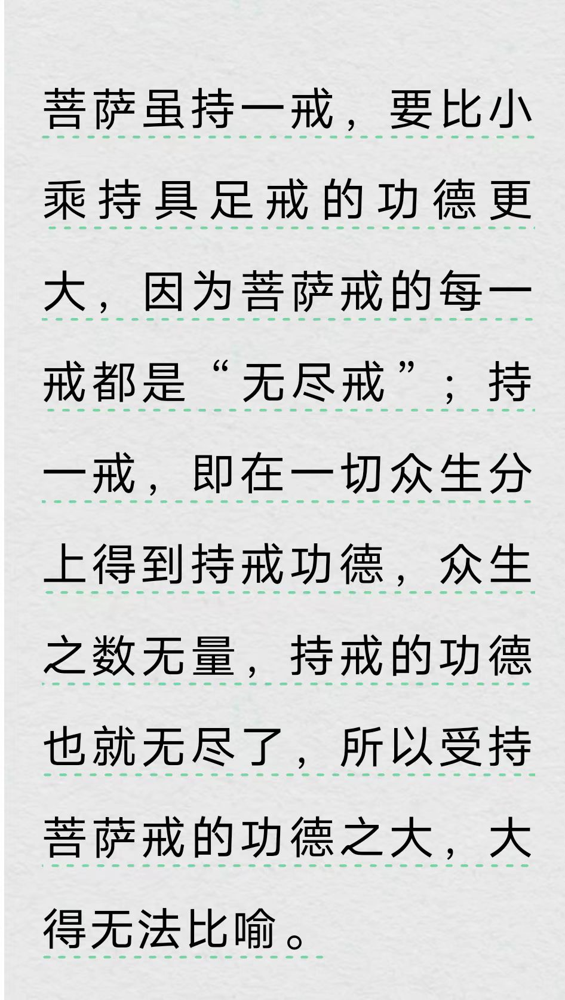

20260521菩萨戒
原始对话记录
以下为编者整理的主题文章
编者整理 · 主题文章
菩萨戒常识：三聚净戒与常见戒本
一句话结论：本页原记录只有一张图片，没有任何文字。围绕标题补知识：菩萨戒是大乘戒的总称，核心为三聚净戒（摄律仪、摄善法、摄众生），常见戒本有《梵网经》十重四十八轻与《瑜伽师地论》菩萨戒。
一、本页原记录：只有一张图片
本页没有文字，只有一张图片（应属戒本或受戒相关的截图、照片）。按规范说明：本页原记录以图片为主，无正文可转述，以下围绕"菩萨戒"作背景整理。图片中应是戒本、戒相或受戒仪轨的局部，因无文字，不便臆测具体内容。
二、菩萨戒在大乘里的位置
"戒"是佛教三学（戒、定、慧）之首。声闻戒重"止恶"，菩萨戒则在止恶之外，进一步讲"修善"与"度众生"，所以又称大乘戒、三聚戒。它不限于出家人，在家居士也可受。三学之中，戒是定慧的根基；声闻戒重在止恶，菩萨戒则把利他列入戒条，发心不同，持守的范围也不同。传统上说，受菩萨戒一般先受三归、五戒打底，再进受菩萨戒。
三、三聚净戒
| 名称 | 内容 | 一句口诀 |
|---|---|---|
| 摄律仪戒 | 断一切恶 | 诸恶莫作 |
| 摄善法戒 | 修一切善 | 众善奉行 |
| 摄众生戒（饶益有情戒） | 度一切众生 | 自净其意 |
三聚净戒是菩萨戒的总纲，各戒本的具体戒条，都是这三条展开出来的。
四、两种常见戒本
- 《梵网经》十重四十八轻：汉地最常诵的菩萨戒本。十重戒为杀、盗、淫、妄、酤酒、说四众过、自赞毁他、悭惜加毁、瞋心不受悔、谤三宝。
- 《瑜伽师地论》菩萨戒：四条重戒（自赞毁他、悭吝财法、瞋不受悔、谤菩萨藏），加四十三轻戒，更侧重"饶益有情"的实践次第。
五、开遮持犯与"利他为先"
菩萨戒的一个特点，是开遮持犯较为灵活：为利益众生，某些轻戒可"开缘"。因此判断犯与不犯，除了看行为，还看发心。这也是它同声闻戒最大的不同。其中十重戒又称根本戒，被视为菩萨戒的核心，其余四十八轻或四十三轻属枝末戒。
六、常见问题
问：在家人能受菩萨戒吗？ 传统上在家、出家都可受，多在有戒坛的寺院依师受戒，具体条件以寺院安排为准。
问：受了戒又破了怎么办？ 仪轨中有忏悔、重受等做法，属教门内部规程，请依师而行。
七、提醒
- 本页原记录为图片，本篇为背景整理；
- 戒条内容属宗教文本，只作介绍，不评断信仰；
- 受戒与否，请依正规寺院与师长指引。
说明与免责：本站为民间修炼、民俗文化与传统文化资料的整理与记录，内容源自传承者口传与个人修习体会，仅供文化交流与研究参考，不构成医疗、健康、投资或任何功效承诺。所述内容属传统术数范畴，请理性看待；如身体不适，请及时就医。请遵守法律法规与公序良俗。